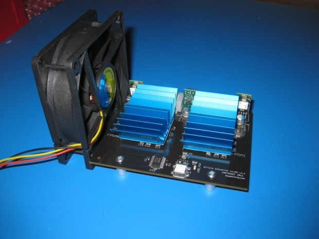
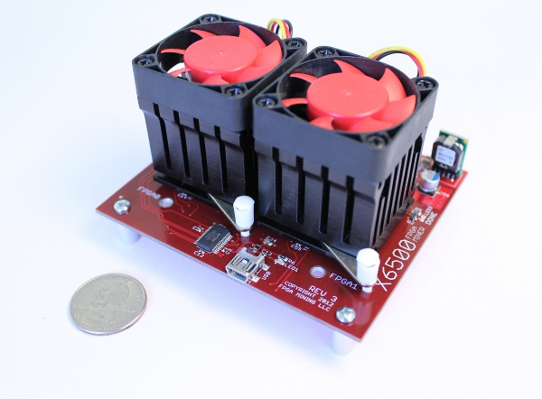
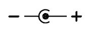

Hardware Setup Guide
Notes About Power and Cooling
The X6500 requires up to about 20W of power at typical hash rates. Compared to GPU miners, this is a relatively small amount, but it's still a significant amount of power. Cheap or faulty power supplies or bad cabling or connectors can lead to serious problems, including starting a fire. Be very careful.
This power will be dissipated as heat, so proper cooling is crucial. A simple way to provide the necessary airflow is using an 80 mm fan set on it's side next to the X6500. If your heatsink has fins, the board should be oriented such that the air is flowing through the fins of the heat sink. An example of this on a Rev 2 X6500 is shown below:

On Rev 3 X6500s, the stock heatsinks have attached fans, which should provide sufficient cooling on their own. Supplementary airflow is always a good idea, to cool the other components on the board and the board itself. A photo of the Rev 3 X6500 with stock heatsinks is shown below:

You will need to experiment with different arrangements to find the one that suits you best. As a rule of thumb, if the board or heatsinks feel any more than slightly warm to the touch, your cooling is not sufficient. Keep in mind that the core of the FPGA will be much hotter than the heatsink or board because of the thermal resistance between these materials. Higher temperatures of the FPGA will increase power consumption, increase hashing errors, and shorten the life of the FPGA.
For more cooling ideas, take a look at the Gallery.
If you have an X6500 rev 3, the board is equipped with an on board temperature sensor, so it will be easier to determine if your cooling is sufficient (and for the software to detect that something has gone wrong, like a fan failure). Still, you should not rely on this sensor alone. Check your cooling carefully and monitor it occasionally, at least during your initial testing.
Powering Your X6500
The X6500 can safely be powered with anything between 5V and 12V DC. The current draw at a given voltage is given by I = V/P, where I is the current, V is the voltage, and P is the power (in watts). Using 20W as a typical power usage, a 5V supply with need to supply at least 4A. A 12V supply will need to supply at least 1.7A. Plan accordingly when purchasing a power supply for your miner (not included). In addition, include a margin of safety on the current limit of a few watts (remember P (watts) = I (amps) * V (volts)).
Note that the rev 3 board can also supply power to two fans through the on board 3-pin headers. If these are used, be sure that your power supply can supply enough current to power the FPGAs and the fans.
The board is equipped with two different connectors for supplying power, so that you can use whichever is more convenient for you. Do not use both connectors at the same time! The first is a 4 pin Molex connector, typically seen in a PC for powering various peripherals. This connector is also called a disk drive connector. With a standard ATX power supply, this connector can supply both 5V and 12V, although only one rail is needed for the X6500. The X6500 rev 2 draws from the 5V pin (pin 4), while the X6500 rev 3 draws from the 12V pin. If you would like to power your rev 2 board with 12V, an adapter is needed to bring the 12V line to pin 4. A Molex connector can be easily modified to do this (instructions here). The same modification can be used to supply a rev 3 board with 5V.
To power off an ATX PSU that is not also powering a computer, you will need to modify it or use a dummy plug to enable it. This means connecting the ENABLE pin to GND. Cablesaurus.com sells dummy plugs exactly for this purpose, and there are guides available on the web for doing this yourself.
The second connector is a standard barrel connector with a 5.5 mm outer diameter and 2.1 mm inner diameter. This type of connector is found in many household electronics, so you may have a suitable power supply already. Before connecting it to your expensive X6500, though, you should check the ratings on the label, and verify that it is operating within those ratings. First and foremost, it needs to be center-positive, meaning the voltage is carried on the center pin and the ground return is on the outside of the connector. This can be checked by looking for this symbol on the label: 
Next, you should check that the voltage output is between 5 and 12V. Cheap power supplies can output higher voltages, so to be safe you should check the output with a voltmeter before using it with your X6500. Finally, confirm that the current rating will supply enough power at the given voltage (plus a safety margin).
Connecting to Your Computer
The X6500 needs to connect to a computer to receive new work and submit hashes to the pool or bitcoind server. This connection is done with USB. A mini-B connector is used on the board. USB hubs can be used to connect multiple X6500s to a single computer.